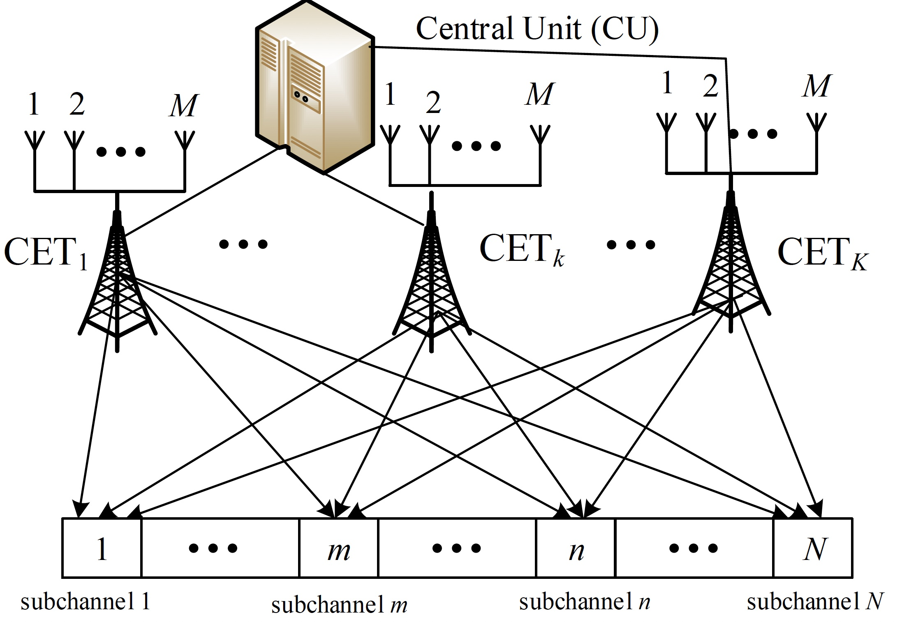

Luo Bing
 |
Joint Postdoctoral Research Fellow at CUHK(SZ) and Yale University Email: luobing@cuhk.edu.cn
Research Interests: Federated learning, reinforcement learning, game theory, cooperative wireless communications and energy harvesting systems. |
Bibliography
I am a joint postdoctoral research fellow at CUHK(SZ) and Yale University, working with Prof. Jianwei Huang and Prof. Leandros Tassiulas on several federated learning topics. I am also with Shenzhen Institute of Artificial intelligence and Robotics for Society (AIRS).
I received my Ph.D. degree from The University of Melbourne, Australia, in 2020, B.S and M.S. degree from Beijing University of Posts and Telecommunications (BUPT), China, in 2009 and 2012, respectively. I was a visiting scholar at IBM T. J. Watson Research Center, NY, USA, in February 2019, Yale University, USA, from September 2018 to January 2019, Friedrich-Alexander-University Erlangen-Nuremberg, Germany, from May to June 2018, and Aalto University, Finland, from September to October 2011. I was a project manager in China Mobile Headquarter, Beijing, from 2013 to 2016, where I led several projects with, Ericsson, and Nokia in improving the quality of China Mobile wireless network.
Research Highlights
 |
Optimization and System Development for Federated Learning in Mobile and IoT Networks
|
 |
Federated Reinforcement Learning for Robotics
|
 |
Resource Optimization for Distributed Coordinated Wireless Transmission Systems
|
|  | Resource Optimization for Distributed Cooperative Wireless Energy Harvesting Systems
|
Publications
Journal Papers
B. Luo, X. Li, S. Wang, J. Huang, L. Tassiulas, “Cost-Effective Federated Learning in Mobile Edge Networks,” accepted in IEEE Journal on Selective Areas in Communications (JSAC), 2021.
B. Luo, PL. Yeoh, R. Schober and B. Krongold, “Distributed Energy Beamforming for Wireless Power Transfer over Frequency-Selective Fading Channels,” submitted to IEEE Transactions on Green Communications and Networking, 2021.
B. Luo, PL. Yeoh, and B. Krongold, “Structural Properties of Optimal Power Allocation for DAS-OFDM under Joint Total and Individual Power Constraints,” in IEEE Transactions on Green Communications and Networking, 2021 doi: 10.1109/TGCN.2021.3098773.
B. Luo, PL. Yeoh, and B. Krongold, “Optimal Co-Phasing Power Allocation and Capacity of Coordinated OFDM Transmission with Total and Individual Power Constraints,” IEEE Transactions on Communications, vol. 67, no. 10, pp. 7103-7113, Oct. 2019.
B. Luo, Q. Cui, and X. Tao, “Optimal Joint Water-Filling for Coordinated Transmission over Frequency-Selective Fading Channels,” IEEE Communication Letters, vol.15, no.2, pp.190-192, Feb. 2011.
B. Luo, Q. Cui, X. Tao, and P. Zhang, “Closed Form Solutions of Joint Water-Filling for Coordinated Transmission,” IEICE Transactions on Communications, vol. 93-B, no. 12, pp. 3461-3468, Jan. 2010.
Q. Cui, B. Luo, X. Huang and A.A. Dowhuszko, “Closed Form Solution for Minimizing Power Consumption in Coordinated Transmissions,” EURASIP Journal on Wireless Communications and Networking: vol. 2012, no. 122, Mar. 2012.
Q. Cui, X. Huang, B. Luo and X. Tao, “Capacity Analysis and Optimal Power Allocation for Coordinated MIMO-OFDM Systems,” Science China Information Sciences, vol. 55, no. 6, pp.1372-1378, Jun. 2012.
Conference Papers
B. Luo, X. Li, S. Wang, J. Huang, L. Tassiulas, “Cost-Effective Federated Learning Design,” IEEE International Conference on Computer Communications (INFOCOM), 2021.
B. Luo, PL. Yeoh, R. Schober and B. Krongold, “Optimal Frequency-Selective Energy Beamforming with Joint Total and Individual Power Constraints”, IEEE Global Communications Conference (GLOBECOM), Waikoloa, HI, USA, December, 2019.
B. Luo, PL. Yeoh and B. Krongold, “Optimal Power Allocation for DAS-OFDM under Joint Total and Individual Power Constraints,” IEEE Global Communications Conference (GLOBECOM), Waikoloa, HI, USA, December, 2019.
B. Luo, PL. Yeoh, R. Schober and B. Krongold, “Optimal Energy Beamforming for Distributed Wireless Power Transfer over Frequency-Selective Channels,” IEEE International Conference on Communications (ICC), Shanghai, China, May 2019.
B. Luo, PL. Yeoh, and B. Krongold, “Optimal Co-phasing Power Allocation for Coordinated OFDM Transmission,” IEEE International Conference on Communications (ICC), Paris, France, Jun. 2017.
B. Luo, Q. Cui, X. Tao, and A.A. Dowhuszko, “On the Optimal Power Allocation for Coordinated Wireless Backhaul in OFDM Based Relay Systems,” IEEE International Conference on Communications (ICC), Budapest, Hungary, Jun. 2013.
B. Luo, Q. Cui, and X. Tao, “Constant-Power Joint Water-filling for Coordinated Transmission,” IEEE Global Communications Conference (GLOBECOM), Houston, US, Dec. 2011.
B. Luo, Q. Cui, H. Wang, and X. Tao, “Optimal Joint Water-filling for OFDM Systems with Multiple Cooperative Power Sources,” IEEE Global Communications Conference (GLOBECOM), Miami, US, Dec. 2010.
Q. Cui, B. Luo, and X. Tao, “Joint Power Allocation Solutions for Power Consumption Minimization in Coordinated Transmission System,” IEEE Global Communications Conference (GLOBECOM) Workshop on Multi-Cell Cooperation, Houston, US, Dec. 2011.
Patents
US Patent: “Method for Allocating Downlink Transmission Power of Coordinated Transmission Devices in Coordinated Multi-point Transmission System”. No. US 8,811,147, Aug., 2014
Inventors: Q. Cui, P. Zhang, X. Tao, B. Luo, A.A. Dowhuszko, and J. Hämäläinen.Chinese Patent: “Method and Apparatus for Distributed Power Control in LTE-A system”. No. CN103906200A, Jul., 2014
Inventors: B. Luo, J. Sun, B. Tan, W. Jin and C. He
Services
TPC member in IEEE ICC 2020、2021, IEEE GLOBECOM 2020, FL-ICML' 2021 and FL-AAAI-2022.
Journal Reviewer for IEEE Journal on Selected Areas in Communications (JSAC), IEEE Transactions on Communications (TCOM), IEEE Transactions on Mobile Computing (TMC), IEEE Intelligent Systems
Selected Awards
Overseas High-Caliber Personnel in Shenzhen (2021)
Joint Postdoctoral Fellowship, AIRS, CUHK(SZ) and Yale University (2020-2022)
Melbourne Research Scholarship, Melbourne University (2016-2019)
Kenneth Myers Memorial Scholarship, Melbourne University (2018) (only one recipient every two years)
Robert Bage Memorial Scholarship, Melbourne University (2017)
Technical Innovation Expert Award, China Mobile (2014)
Advanced LTE Technology Professionals Award, China Mobile (2013)
Outstanding Master Thesis, BUPT (2012)
Wu Tong Communications. Co., Ltd, Scholarship (2012)
National First Grade Scholarship (2011)
Meritorious Winner 24th US Mathematical Contest in Modeling (2008)